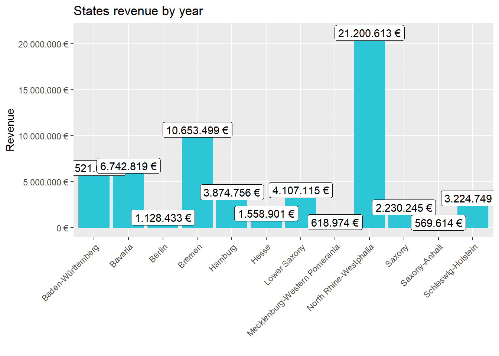
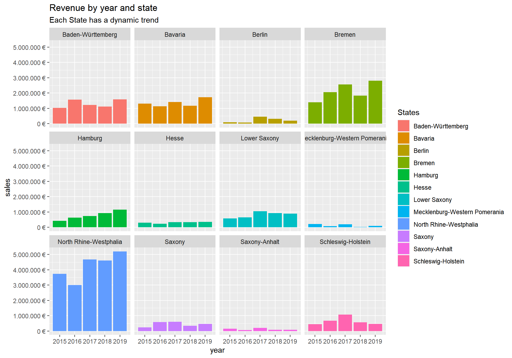

Journal (reproducible report)
Ahmed Shahee
2020-11-05
IMPORTANT: You can delete everything in here and start fresh. You might want to start by not deleting anything above this line until you know what that stuff is doing.
This is an .Rmd file. It is plain text with special features. Any time you write just like this, it will be compiled to normal text in the website. If you put a # in front of your text, it will create a top level-header.
1 My first post
Last compiled: 2020-12-03
Notice that whatever you define as a top level header, automatically gets put into the table of contents bar on the left.
1.1 Second level header
You can add more headers by adding more hashtags. These won’t be put into the table of contents
1.1.1 third level header
Here’s an even lower level header
2 My second post (note the order)
Last compiled: 2020-12-03
I’m writing this tutorial going from the top down. And, this is how it will be printed. So, notice the second post is second in the list. If you want your most recent post to be at the top, then make a new post starting at the top. If you want the oldest first, do, then keep adding to the bottom
3 Adding R stuff
So far this is just a blog where you can write in plain text and serve your writing to a webpage. One of the main purposes of this lab journal is to record your progress learning R. The reason I am asking you to use this process is because you can both make a website, and a lab journal, and learn R all in R-studio. This makes everything really convenient and in the same place.
So, let’s say you are learning how to make a histogram in R. For example, maybe you want to sample 100 numbers from a normal distribution with mean = 0, and standard deviation = 1, and then you want to plot a histogram. You can do this right here by using an r code block, like this:
samples <- rnorm(100, mean=0, sd=1)
hist(samples)
When you knit this R Markdown document, you will see that the histogram is printed to the page, along with the R code. This document can be set up to hide the R code in the webpage, just delete the comment (hashtag) from the cold folding option in the yaml header up top. For purposes of letting yourself see the code, and me see the code, best to keep it the way that it is. You’ll learn that all of these things and more can be customized in each R code block.
4 Session_2 challenge:
4.1 Task description: SALES ANALYSIS :
Analyze the sales by location (state) with a bar plot. Since state and city are multiple features (variables), they should be split. Which state has the highes revenue? Replace your bike_orderlines_wrangled_tbl object with the newly wrangled object (with the columns state and city).
4.2 Solution:
Load Libraries
library(tidyverse)
library(readxl)Importing Files
bikes_tbl <- read_excel("00_data/01_bike_sales/01_raw_data/bikes.xlsx")
orderlines_tbl <- read_excel("00_data/01_bike_sales/01_raw_data/orderlines.xlsx")
bikeshops_tbl <- read_excel("00_data/01_bike_sales/01_raw_data/bikeshops.xlsx")Joining Data
left_join(orderlines_tbl, bikes_tbl, by = c("product.id" = "bike.id"))## # A tibble: 15,644 x 15
## ...1 order.id order.line order.date customer.id product.id quantity
## <chr> <dbl> <dbl> <dttm> <dbl> <dbl> <dbl>
## 1 1 1 1 2015-01-07 00:00:00 2 2681 1
## 2 2 1 2 2015-01-07 00:00:00 2 2411 1
## 3 3 2 1 2015-01-10 00:00:00 10 2629 1
## 4 4 2 2 2015-01-10 00:00:00 10 2137 1
## 5 5 3 1 2015-01-10 00:00:00 6 2367 1
## 6 6 3 2 2015-01-10 00:00:00 6 1973 1
## 7 7 3 3 2015-01-10 00:00:00 6 2422 1
## 8 8 3 4 2015-01-10 00:00:00 6 2655 1
## 9 9 3 5 2015-01-10 00:00:00 6 2247 1
## 10 10 4 1 2015-01-11 00:00:00 22 2408 1
## # ... with 15,634 more rows, and 8 more variables: model <chr>,
## # model.year <dbl>, frame.material <chr>, weight <dbl>, price <dbl>,
## # category <chr>, gender <chr>, url <chr>Chaining commands with the pipe and assigning it to order_items_joined_tbl
bike_orderlines_joined_tbl <- orderlines_tbl %>%
left_join(bikes_tbl, by = c("product.id" = "bike.id")) %>%
left_join(bikeshops_tbl, by = c("customer.id" = "bikeshop.id"))
bike_orderlines_joined_tbl## # A tibble: 15,644 x 19
## ...1 order.id order.line order.date customer.id product.id quantity
## <chr> <dbl> <dbl> <dttm> <dbl> <dbl> <dbl>
## 1 1 1 1 2015-01-07 00:00:00 2 2681 1
## 2 2 1 2 2015-01-07 00:00:00 2 2411 1
## 3 3 2 1 2015-01-10 00:00:00 10 2629 1
## 4 4 2 2 2015-01-10 00:00:00 10 2137 1
## 5 5 3 1 2015-01-10 00:00:00 6 2367 1
## 6 6 3 2 2015-01-10 00:00:00 6 1973 1
## 7 7 3 3 2015-01-10 00:00:00 6 2422 1
## 8 8 3 4 2015-01-10 00:00:00 6 2655 1
## 9 9 3 5 2015-01-10 00:00:00 6 2247 1
## 10 10 4 1 2015-01-11 00:00:00 22 2408 1
## # ... with 15,634 more rows, and 12 more variables: model <chr>,
## # model.year <dbl>, frame.material <chr>, weight <dbl>, price <dbl>,
## # category <chr>, gender <chr>, url <chr>, name <chr>, location <chr>,
## # lat <dbl>, lng <dbl>Re-format:
bike_orderlines_joined_tbl %>% glimpse()## Rows: 15,644
## Columns: 19
## $ ...1 <chr> "1", "2", "3", "4", "5", "6", "7", "8", "9", "10", "...
## $ order.id <dbl> 1, 1, 2, 2, 3, 3, 3, 3, 3, 4, 5, 5, 5, 5, 6, 6, 6, 6...
## $ order.line <dbl> 1, 2, 1, 2, 1, 2, 3, 4, 5, 1, 1, 2, 3, 4, 1, 2, 3, 4...
## $ order.date <dttm> 2015-01-07, 2015-01-07, 2015-01-10, 2015-01-10, 201...
## $ customer.id <dbl> 2, 2, 10, 10, 6, 6, 6, 6, 6, 22, 8, 8, 8, 8, 16, 16,...
## $ product.id <dbl> 2681, 2411, 2629, 2137, 2367, 1973, 2422, 2655, 2247...
## $ quantity <dbl> 1, 1, 1, 1, 1, 1, 1, 1, 1, 1, 1, 2, 1, 1, 1, 1, 1, 1...
## $ model <chr> "Spectral CF 7 WMN", "Ultimate CF SLX Disc 8.0 ETAP"...
## $ model.year <dbl> 2021, 2020, 2021, 2019, 2020, 2020, 2020, 2021, 2020...
## $ frame.material <chr> "carbon", "carbon", "carbon", "carbon", "aluminium",...
## $ weight <dbl> 13.80, 7.44, 14.06, 8.80, 11.50, 8.80, 8.20, 8.85, 1...
## $ price <dbl> 3119, 5359, 2729, 1749, 1219, 1359, 2529, 1559, 3899...
## $ category <chr> "Mountain - Trail - Spectral", "Road - Race - Ultima...
## $ gender <chr> "female", "unisex", "unisex", "unisex", "unisex", "u...
## $ url <chr> "https://www.canyon.com/en-de/mountain-bikes/trail-b...
## $ name <chr> "AlexandeRad", "AlexandeRad", "WITT-RAD", "WITT-RAD"...
## $ location <chr> "Hamburg, Hamburg", "Hamburg, Hamburg", "Bremen, Bre...
## $ lat <dbl> 53.57532, 53.57532, 53.07379, 53.07379, 48.78234, 48...
## $ lng <dbl> 10.015340, 10.015340, 8.826754, 8.826754, 9.180819, ...Wrangling Data
bike_orderlines_joined_tbl %>%
select(category) %>%
filter(str_detect(category, "^Mountain")) %>%
unique()## # A tibble: 10 x 1
## category
## <chr>
## 1 Mountain - Trail - Spectral
## 2 Mountain - Trail - Neuron
## 3 Mountain - Dirt Jump - Stitched
## 4 Mountain - Enduro - Torque
## 5 Mountain - Trail - Grand Canyon
## 6 Mountain - Cross-Country - Lux
## 7 Mountain - Enduro - Strive
## 8 Mountain - Downhill - Sender
## 9 Mountain - Fat Bikes - Dude
## 10 Mountain - Cross-Country - Exceedbike_orderlines_joined_tbl## # A tibble: 15,644 x 19
## ...1 order.id order.line order.date customer.id product.id quantity
## <chr> <dbl> <dbl> <dttm> <dbl> <dbl> <dbl>
## 1 1 1 1 2015-01-07 00:00:00 2 2681 1
## 2 2 1 2 2015-01-07 00:00:00 2 2411 1
## 3 3 2 1 2015-01-10 00:00:00 10 2629 1
## 4 4 2 2 2015-01-10 00:00:00 10 2137 1
## 5 5 3 1 2015-01-10 00:00:00 6 2367 1
## 6 6 3 2 2015-01-10 00:00:00 6 1973 1
## 7 7 3 3 2015-01-10 00:00:00 6 2422 1
## 8 8 3 4 2015-01-10 00:00:00 6 2655 1
## 9 9 3 5 2015-01-10 00:00:00 6 2247 1
## 10 10 4 1 2015-01-11 00:00:00 22 2408 1
## # ... with 15,634 more rows, and 12 more variables: model <chr>,
## # model.year <dbl>, frame.material <chr>, weight <dbl>, price <dbl>,
## # category <chr>, gender <chr>, url <chr>, name <chr>, location <chr>,
## # lat <dbl>, lng <dbl>bike_orderlines_wrangled_city_separated_tbl <- bike_orderlines_joined_tbl %>%
#Separate category name
separate(col = category,
into = c("category.1", "category.2", "category.3"),
sep = " - ") %>%
#Separate city and state
separate(col = location,
into = c("City", "State"),
sep = ", ") %>%
#Add the total price (price * quantity)
mutate(total.price = price * quantity)%>%
#Reorganize (remove unwanted columns)
select(-...1, -gender)%>%
#Organize by pattern
select(-ends_with(".id"))%>%
#Re-add order.id column
bind_cols(bike_orderlines_joined_tbl %>% select(order.id)) %>%
#Re-order:
select(order.id, contains("order"), contains("model"), contains("category"),
price, quantity, total.price,
everything()) %>%
#Rename columns (one at the time vs. multiple at once)
rename(bikeshop = name) %>%
set_names(names(.) %>% str_replace_all("\\.", "_"))
bike_orderlines_wrangled_city_separated_tbl## # A tibble: 15,644 x 19
## order_id order_line order_date model model_year category_1
## <dbl> <dbl> <dttm> <chr> <dbl> <chr>
## 1 1 1 2015-01-07 00:00:00 Spec~ 2021 Mountain
## 2 1 2 2015-01-07 00:00:00 Ulti~ 2020 Road
## 3 2 1 2015-01-10 00:00:00 Neur~ 2021 Mountain
## 4 2 2 2015-01-10 00:00:00 Spee~ 2019 Road
## 5 3 1 2015-01-10 00:00:00 Stit~ 2020 Mountain
## 6 3 2 2015-01-10 00:00:00 Road~ 2020 Hybrid / ~
## 7 3 3 2015-01-10 00:00:00 Spee~ 2020 Road
## 8 3 4 2015-01-10 00:00:00 Infl~ 2021 Road
## 9 3 5 2015-01-10 00:00:00 Torq~ 2020 Mountain
## 10 4 1 2015-01-11 00:00:00 Ulti~ 2020 Road
## # ... with 15,634 more rows, and 13 more variables: category_2 <chr>,
## # category_3 <chr>, price <dbl>, quantity <dbl>, total_price <dbl>,
## # frame_material <chr>, weight <dbl>, url <chr>, bikeshop <chr>, City <chr>,
## # State <chr>, lat <dbl>, lng <dbl>Business Insights
#Analyze the sales by location (state) ----
library(lubridate)
# Step 1 - Manipulate
sales_by_location_tbl <- bike_orderlines_wrangled_city_separated_tbl %>%
# Select columns
select(State, City, total_price) %>%
# Grouping by state and summarizing sales
group_by(State) %>%
summarize(state_sales = sum(total_price)) %>%
# Optional: Add a column that turns the numbers into a currency format
# (makes it in the plot optically more appealing)
# mutate(sales_text = scales::dollar(sales)) <- Works for dollar values
mutate(sales_formatted = scales::dollar(state_sales, big.mark = ".",
decimal.mark = ",",
prefix = "",
suffix = " €"))
sales_by_location_tbl## # A tibble: 12 x 3
## State state_sales sales_formatted
## <chr> <dbl> <chr>
## 1 Baden-Württemberg 6521090 6.521.090 €
## 2 Bavaria 6742819 6.742.819 €
## 3 Berlin 1128433 1.128.433 €
## 4 Bremen 10653499 10.653.499 €
## 5 Hamburg 3874756 3.874.756 €
## 6 Hesse 1558901 1.558.901 €
## 7 Lower Saxony 4107115 4.107.115 €
## 8 Mecklenburg-Western Pomerania 618974 618.974 €
## 9 North Rhine-Westphalia 21200613 21.200.613 €
## 10 Saxony 2230245 2.230.245 €
## 11 Saxony-Anhalt 569614 569.614 €
## 12 Schleswig-Holstein 3224749 3.224.749 €# Step 2 - Visualize
sales_by_location_tbl %>%
# Setup canvas with the columns year (x-axis) and sales (y-axis)
ggplot(aes(x = State, y = state_sales)) +
# Geometries
geom_col(fill = "#2DC6D6") + # Use geom_col for a bar plot
geom_label(aes(label = sales_formatted)) + # Adding labels to the bars
geom_smooth(method = "lm", se = FALSE) + # Adding a trendline
# Formatting
# scale_y_continuous(labels = scales::dollar) + # Change the y-axis.
# Again, we have to adjust it for euro values
scale_y_continuous(labels = scales::dollar_format(big.mark = ".",
decimal.mark = ",",
prefix = "",
suffix = " €")) +
# Rotate plot:
theme(axis.text.x = element_text(angle = 45, hjust = 1)) +
labs(
title = "States revenue by year",
x = "", # Override defaults for x and y
y = "Revenue"
)
#**Step 2 - Visualize**
sales_by_location_tbl %>%
ggplot(aes(x = State, y = state_sales)) +
#Geometries
geom_col(fill = "#2DC6D6") + # Use geom_col for a bar plot
geom_label(aes(label = sales_formatted)) + # Adding labels to the bars
geom_smooth(method = "lm", se = FALSE) + # Adding a trendline
#Formatting
scale_y_continuous(labels = scales::dollar) + # Change the y-axis.
#Again, we have to adjust it for euro values
scale_y_continuous(labels = scales::dollar_format(big.mark = ".",
decimal.mark = ",",
prefix = "",
suffix = " €")) +
#Rotate plot:
theme(axis.text.x = element_text(angle = 45, hjust = 1)) +
labs(
title = "States revenue by year",
x = "", # Override defaults for x and y
y = "Revenue"
)
Analyze the sales by location and year
#Step 1 - Manipulate
sales_by_state_year_tbl <- bike_orderlines_wrangled_city_separated_tbl %>%
# Select columns and add a year
select(order_date, total_price, State) %>%
mutate(year = year(order_date)) %>%
# Group by and summarize year and main catgegory
group_by(State, year) %>%
summarise(sales = sum(total_price)) %>%
ungroup() %>%
# Format $ Text
mutate(sales_formatted = scales::dollar(sales, big.mark = ".",
decimal.mark = ",",
prefix = "",
suffix = " €"))# Step 2 - Visualize
sales_by_state_year_tbl %>%
# Set up x, y, fill
ggplot(aes(x = year, y = sales, fill = State)) +
# Geometries
geom_col() + # Run up to here to get a stacked bar plot
# Facet
facet_wrap(~ State) +
# Formatting
scale_y_continuous(labels = scales::dollar_format(big.mark = ".",
decimal.mark = ",",
prefix = "",
suffix = " €")) +
labs(
title = "Revenue by year and state",
subtitle = "Each State has a dynamic trend",
fill = "States" # Changes the legend name
)
Writing Files
#Excel:
library("writexl")
bike_orderlines_wrangled_city_separated_tbl %>%
write_xlsx("00_data/01_bike_sales/02_wrangled_data/bike_orderlines.xlsx")
#CSV:
bike_orderlines_wrangled_city_separated_tbl %>%
write_csv("00_data/01_bike_sales/02_wrangled_data/bike_orderlines.csv")
#RDS:
bike_orderlines_wrangled_city_separated_tbl %>%
write_rds("00_data/01_bike_sales/02_wrangled_data/bike_orderlines.rds")5 Challenge 3 Web scrapping
5.1 Task description
Get some data via an API. There are millions of providers, that offer API access for free and have good documentation about how to query their service. You just have to google them. You can use whatever service you want. For example, you can get data about your listening history (spotify), get data about flights (skyscanner) or just check the weather forecast.
Scrape one of the competitor websites of canyon (either https://www.rosebikes.de/ or https://www.radon-bikes.de) and create a small database. The database should contain the model names and prices for at least one category. Use the selectorgadget to get a good understanding of the website structure.
5.2 Solution
#Session3_ Challenge:
Notes: # 200: The request has succeeded. # 403: The client does not have access rights to the content. # 404: Not found. The server can not find the requested resource.
1.0 LIBRARIES
library(tidyverse) # Main Package - Loads dplyr, purrr, etc.
library(rvest) # HTML Hacking & Web Scraping
library(xopen) # Quickly opening URLs
library(jsonlite) # converts JSON files to R objects
library(glue) # concatenate strings
library(stringi) # character string/text processing
library(RSQLite)
library(httr)
library("rstudioapi")Read wibsite API
url = "https://itunes.apple.com/search?term=radiohead"
resp <- GET(url)
##########################
#From a character vector, we can convert it into list data structure using
#the fromJSON() function from the jsonlite library. We can use toJSON() to
#convert something back to the original JSON structure.
##########################
respone_tbl <- resp %>% .$content %>% rawToChar() %>% fromJSON() %>% as_tibble()
kable(respone_tbl)| resultCount | results |
|---|---|
| 50 | track |
| 50 | track |
| 50 | track |
| 50 | track |
| 50 | track |
| 50 | track |
| 50 | track |
| 50 | track |
| 50 | track |
| 50 | track |
| 50 | track |
| 50 | track |
| 50 | track |
| 50 | track |
| 50 | track |
| 50 | track |
| 50 | track |
| 50 | track |
| 50 | track |
| 50 | track |
| 50 | track |
| 50 | track |
| 50 | track |
| 50 | track |
| 50 | track |
| 50 | track |
| 50 | track |
| 50 | track |
| 50 | track |
| 50 | track |
| 50 | track |
| 50 | track |
| 50 | track |
| 50 | track |
| 50 | track |
| 50 | track |
| 50 | track |
| 50 | track |
| 50 | track |
| 50 | track |
| 50 | track |
| 50 | track |
| 50 | track |
| 50 | track |
| 50 | track |
| 50 | track |
| 50 | track |
| 50 | track |
| 50 | track |
| 50 | track |
WEBSCRAPING
# 1.0 COLLECT PRODUCT FAMILIES —-
url_home <- "https://www.rosebikes.de"# Read in the HTML for the entire webpage
html_home <- read_html(url_home)# Web scrape the ids for the families
bike_family_tbl <- html_home %>%
# Get the nodes for the families ...
html_nodes(css = ".main-navigation-category-with-tiles__item > a") %>%
# ...and extract the information of the id attribute
html_attr('href') %>%
# Remove the product families Gear and Outlet and Woman
# (because the female bikes are also listed with the others)
discard(.p = ~stringr::str_detect(.x,"sale|reise|urban|kinder|cyclocross|e-bike")) %>%
# Convert vector to tibble
enframe( name = "", value = "subdirectory") %>%
select(-"") %>%
# Add the domain, because we will get only the subdirectories
mutate(
url = glue("https://www.rosebikes.de{subdirectory}")
) %>%
separate(col = subdirectory,
into = c("S","MI", "category_name"),
sep = "/")%>%
select(-"S",-"MI")
kable(bike_family_tbl)| category_name | url |
|---|---|
| mtb | https://www.rosebikes.de/fahrräder/mtb |
| rennrad | https://www.rosebikes.de/fahrräder/rennrad |
| gravel | https://www.rosebikes.de/fahrräder/gravel |
| fitness | https://www.rosebikes.de/fahrräder/fitness |
| trekking | https://www.rosebikes.de/fahrräder/trekking |
# 2.0 COLLECT BIKE DATA
# 2.2 Wrap it into a function
get_bike_data <- function(url, category) {
html_bike<- read_html(url)
bikes <- html_bike %>% html_nodes(css = ".catalog-category-bikes__title-text")%>%
html_text() %>%
enframe(name = "No.", value = "Bike Name")
bike_url <- bikes%>%
mutate (
Price = html_bike %>%
html_nodes(css = ".catalog-category-bikes__price-title")%>%
html_text()
)
for (type in bikes) {
bike_url <- bike_url %>% mutate(
category_name = category
)
}
return (bike_url)
}# Extract the urls as a character vector
bike_category_url_vec <- bike_family_tbl %>% pull(url)
bike_category_cag_vec <- bike_family_tbl %>% pull(category_name)
bike_data_1 = get_bike_data(bike_category_url_vec[1],bike_category_cag_vec[1])
bike_data_2 = get_bike_data(bike_category_url_vec[2],bike_category_cag_vec[2])
bike_data_3 = get_bike_data(bike_category_url_vec[3],bike_category_cag_vec[3])
bike_data_4 = get_bike_data(bike_category_url_vec[4],bike_category_cag_vec[4])
# Merge the list into a tibble
bike_data_tbl <- bind_rows(bike_data_1,bike_data_2,bike_data_3, bike_data_4)
saveRDS(bike_data_tbl, "bike_data_tbl.rds")
kable(bike_data_tbl)| No. | Bike Name | Price | category_name |
|---|---|---|---|
| 1 | GROUND CONTROL | ab 1.699,00 € | mtb |
| 2 | ROOT MILLER | ab 1.999,00 € | mtb |
| 3 | PIKES PEAK | ab 3.099,00 € | mtb |
| 4 | THE BRUCE | mtb | |
| 5 | COUNT SOLO | mtb | |
| 6 | PSYCHO PATH | ab 1.849,00 € | mtb |
| 7 | THRILL HILL | ab 2.599,00 € | mtb |
| 8 | THRILL HILL TRAIL | ab 2.899,00 € | mtb |
| 9 | SOUL FIRE | ab 2.149,00 € | mtb |
| 1 | PRO SL DISC | ab 1.599,00 € | rennrad |
| 2 | PRO SL | ab 1.199,00 € | rennrad |
| 3 | REVEAL FOUR DISC | ab 2.499,00 € | rennrad |
| 4 | REVEAL FOUR | ab 2.099,00 € | rennrad |
| 5 | REVEAL SIX DISC | ab 3.499,00 € | rennrad |
| 6 | X-LITE FOUR DISC | ab 2.699,00 € | rennrad |
| 7 | X-LITE FOUR | ab 2.199,00 € | rennrad |
| 8 | X-LITE SIX DISC | ab 3.899,00 € | rennrad |
| 9 | X-LITE SIX | ab 3.499,00 € | rennrad |
| 1 | BACKROAD AL | ab 1.549,00 € | gravel |
| 2 | BACKROAD | ab 2.599,00 € | gravel |
| 3 | BACKROAD LIMITED | ab 4.599,00 € | gravel |
| 1 | MULTISTREET FITNESS | ab 1.299,00 € | fitness |
| 2 | MULTISPORT FITNESS | ab 1.099,00 € | fitness |
| 3 | MULTICROSS | ab 2.149,00 € | fitness |
6 Session 4 challenge: Data wrangling
6.1 Task description:
Patent Dominance: What US company / corporation has the most patents? List the 10 US companies with the most assigned/granted patents.
Recent patent acitivity: What US company had the most patents granted in 2019? List the top 10 companies with the most new granted patents for 2019.
Innovation in Tech: What is the most innovative tech sector? For the top 10 companies (worldwide) with the most patents, what are the top 5 USPTO tech main classes?
6.2 Solution:
Patents analysis # Importing data:
library(vroom)
# Tidyverse
library(tidyverse)
# Data Table
library(data.table)
# Counter
library(tictoc)Patents DATA IMPORT
# Patents data preparation:
col_types <- list(
id = col_character(),
date = col_date("%Y-%m-%d"),
num_claims = col_double()
)
patent_tbl <- vroom(
file = "patent.tsv",
delim = "\t",
col_types = col_types,
na = c("", "NA", "NULL")
)
# Assignee data preparation:
col_types_assignee <- list(
id = col_character(),
type = col_character(),
organization = col_character()
)
assignee_tbl <- vroom(
file = "assignee.tsv",
delim = "\t",
col_types = col_types_assignee,
na = c("", "NA", "NULL")
)
# Patent-Assignee data preparation:
col_types_patent_assignee <- list(
patent_id = col_character(),
assignee_id = col_character()
)
patent_assignee_tbl <- vroom(
file = "patent_assignee.tsv",
delim = "\t",
col_types = col_types_patent_assignee,
na = c("", "NA", "NULL")
)
col_types_uspc <- list(
patent_id = col_character(),
mainclass_id = col_number(),
sequence = col_number()
)
# USPC data preparation:
uspc_tbl <- vroom(
file = "uspc.tsv",
delim = "\t",
col_types = col_types_uspc,
na = c("", "NA", "NULL")
)Acquisition Data
setDT(assignee_tbl)
setDT(patent_tbl)
setDT(patent_assignee_tbl)
setDT(uspc_tbl)
patent_tbl %>% glimpse()## Rows: 327,014
## Columns: 3
## $ id <chr> "8621662", "8621663", "8621664", "8621665", "8621666", "...
## $ date <date> 2014-01-07, 2014-01-07, 2014-01-07, 2014-01-07, 2014-01...
## $ num_claims <dbl> 11, 6, 10, 18, 7, 9, 21, 19, 8, 18, 7, 15, 15, 15, 18, 7...assignee_tbl %>% glimpse()## Rows: 47,011
## Columns: 3
## $ id <chr> "org_004j997jM9yEdS7z4ReD", "org_005hVGA5JMOZsS0xOhGa"...
## $ type <chr> "3", "3", "2", "2", "3", "3", "2", "3", "2", "3", "2",...
## $ organization <chr> "University of Basel", "Zetkama Spólka Akcyjna", "Mira...patent_assignee_tbl %>% glimpse()## Rows: 315,910
## Columns: 2
## $ patent_id <chr> "8709412", "8636251", "8899346", "8700141", "8724986", ...
## $ assignee_id <chr> "org_MPhnVOTFsXybN0auC647", "org_v7VisXnmZZEEUMeHhW6y",...uspc_tbl %>% glimpse()## Rows: 815,743
## Columns: 3
## $ patent_id <chr> "8829273", "8623780", "8904894", "8794165", "8773920",...
## $ mainclass_id <dbl> 435, 502, 368, 111, 365, 128, 709, 707, 455, 424, 502,...
## $ sequence <dbl> 7, 2, 0, 1, 0, 4, 2, 1, 2, 2, 10, 1, 2, 4, 1, 1, 9, 0,...DATA WRANGLING
# Start the analysis:
Task1
#########################################################################
# Q1.Patent Dominance: What US company / corporation has the most patents?
# List the 10 US companies with the most assigned/granted patents.
## Output:
#########################################################################
#summarize and count:
setnames(assignee_tbl, "id", "assignee_id")
combined_data <- merge(x = patent_assignee_tbl, y = assignee_tbl, by = "assignee_id")
us_patents <- combined_data %>%
filter(type == 2)%>%
filter(!is.na(patent_id) || !is.na(organization)) %>%
select(-type, -assignee_id)%>%
group_by(organization) %>%
count(patent_id) %>%
select(-patent_id)%>%
summarise(total = sum(n))%>%
arrange(desc(total))
us_top_10 <- us_patents %>% slice(1:10)
kable(us_top_10)| organization | total |
|---|---|
| International Business Machines Corporation | 7547 |
| Microsoft Corporation | 3165 |
| Google Inc. | 2668 |
| QUALCOMM Incorporated | 2597 |
| Apple Inc. | 2201 |
| General Electric Company | 1873 |
| Hewlett-Packard Development Company, L.P. | 1638 |
| AT&T INTELLECTUAL PROPERTY I, L.P. | 1625 |
| Intel Corporation | 1616 |
| GM Global Technology Operations LLC | 1533 |
Task2
#########################################################################
# Q2. Recent patent acitivity: What US company had the most patents granted in 2014?
#List the top 10 companies with the most new granted patents for 2019.
#########################################################################
tbl_2 <- patent_tbl %>%
separate(col = date,
into = c("year", "month", "day"),
sep = "-", remove = TRUE) %>%
mutate(
month = as.numeric(month)
)%>%
filter(month == 01)%>%
select(-year, -day)
setnames(tbl_2, "id", "patent_id")
combined_data_2 <- merge(x = tbl_2, y = combined_data, by = "patent_id")
us_top10_2014_01 <- combined_data_2%>%
filter(type == 2)%>%
filter(!is.na(patent_id) || !is.na(organization)) %>%
select(organization, patent_id) %>%
group_by(organization) %>%
count(patent_id) %>%
summarise(total_patents = sum(n))%>%
arrange(desc(total_patents)) %>% slice(1:10)
us_top10_2014_01_new <- combined_data_2%>%
filter(type == 2 & num_claims == 1)%>%
filter(!is.na(patent_id) || !is.na(organization)) %>%
select(organization, patent_id) %>%
group_by(organization) %>%
count(patent_id) %>%
summarise(total_patents = sum(n))%>%
arrange(desc(total_patents)) %>% slice(1:10)
kable(us_top10_2014_01, caption = "US to 10 compnies with granted patents")| organization | total_patents |
|---|---|
| International Business Machines Corporation | 628 |
| Microsoft Corporation | 220 |
| QUALCOMM Incorporated | 201 |
| Google Inc. | 144 |
| Apple Inc. | 133 |
| GM Global Technology Operations LLC | 129 |
| AT&T INTELLECTUAL PROPERTY I, L.P. | 123 |
| Intel Corporation | 105 |
| General Electric Company | 96 |
| Cisco Technology, Inc. | 94 |
kable(us_top10_2014_01_new, caption = "US top 10 compnies with New granted patents")| organization | total_patents |
|---|---|
| NIKE, Inc. | 15 |
| Spectrum Diversified Designs, Inc. | 12 |
| Bumble BE Holdings, LLC | 11 |
| KM Fashion Eyewear, LLC | 11 |
| KOHLER CO. | 11 |
| Steelcase Inc. | 11 |
| 3M Innovative Properties Company | 10 |
| OSRAM SYLVANIA Inc. | 10 |
| Apple Inc. | 9 |
| Masco Corporation of Indiana | 9 |
Task3
#########################################################################
# Q. Innovation in Tech: What is the most innovative tech sector?
# What is the most innovative tech sector? For the top 10 companies (worldwide)
# with the most patents, what are the top 5 USPTO tech main classes?
#########################################################################
combined_data_3 <- merge(x = uspc_tbl, y = combined_data_2, by = "patent_id")
top10_worlwide_patents <- combined_data_3 %>%
filter(!is.na(patent_id) || !is.na(organization))%>%
group_by(organization) %>%
arrange(desc(mainclass_id)) %>% # set mainclass order first, the result will be sorted automatically
count(patent_id) %>%
select(-patent_id)%>%
summarise(total_patents_wordwide = sum(n))%>%
ungroup() %>%
arrange(desc(total_patents_wordwide)) %>% slice(1:10)
top10_worlwid_top5_upts <- top10_worlwide_patents %>% slice(1:5)
kable(top10_worlwide_patents, caption = "Top 10 granted patents compnies WORLD WIDE")| organization | total_patents_wordwide |
|---|---|
| International Business Machines Corporation | 1553 |
| Samsung Electronics Co., Ltd. | 983 |
| Canon Kabushiki Kaisha | 753 |
| Microsoft Corporation | 640 |
| Sony Corporation | 640 |
| QUALCOMM Incorporated | 618 |
| Hon Hai Precision Industry Co., Ltd. | 586 |
| AT&T INTELLECTUAL PROPERTY I, L.P. | 434 |
| Samsung Display Co., Ltd. | 421 |
| LG Electronics Inc. | 411 |
kable(top10_worlwid_top5_upts, caption = "Top 5 compnies acquiring UPTS among the TOP 10")| organization | total_patents_wordwide |
|---|---|
| International Business Machines Corporation | 1553 |
| Samsung Electronics Co., Ltd. | 983 |
| Canon Kabushiki Kaisha | 753 |
| Microsoft Corporation | 640 |
| Sony Corporation | 640 |